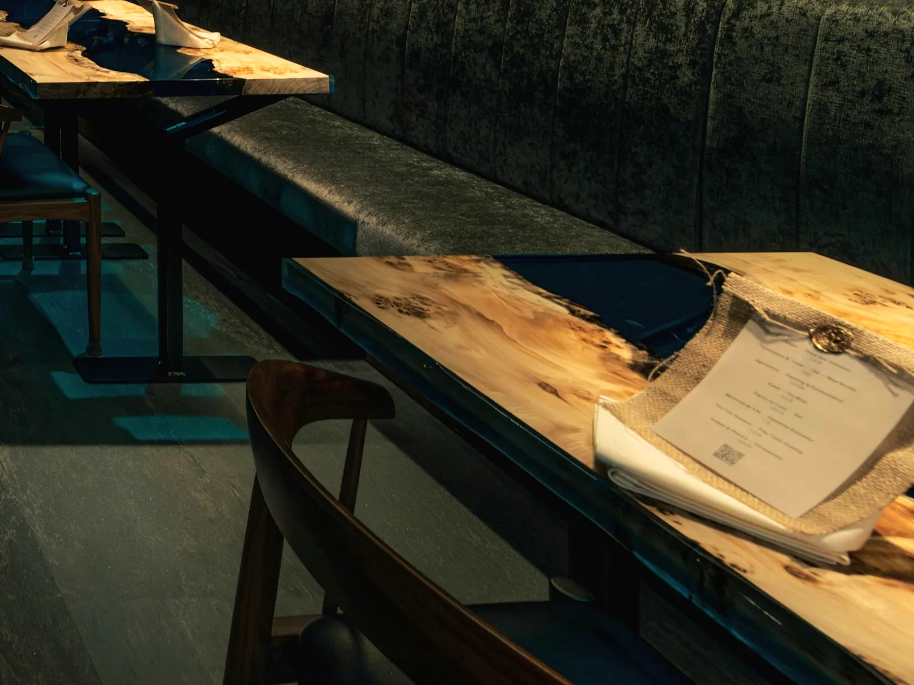

この後ご予定がある夜に
ショートコース
全5章・テーブル席・1〜8名
お酒を
¥14,800税込・サービス料別
空席を見る
料金は
Our Story
外資系の
「エシカル」は
最後の
Chapters
ETHICA コレクションの
地球カレンダー46億年を
1皿目、38億年前
地球カレンダー3月5日
最初の
↓35億年すすむ
2皿目、3億年前
地球カレンダー12月8日
背骨を
↺43億年さかのぼる
3皿目、46億年前
地球カレンダー1月1日 0時
燃える
↓41億年すすむ
4皿目、5億年前
地球カレンダー11月22日
土の
↓3億年すすむ
5皿目、2億年前
地球カレンダー12月16日
恐竜の
↓1億3400万年すすむ
6皿目、6600万年前
地球カレンダー12月26日 18時ごろ
主役の
↓約6600万年すすむ
7皿目、500年前
地球カレンダー12月31日 23:59:56
年越しの
↺約4億年さかのぼる
8皿目、4億年前
地球カレンダー11月30日
昆虫と
↓約4億年すすむ
今夜
地球カレンダー12月31日 24:00
コーヒーまたは
大晦日、最後の10秒。1秒は、およそ146年。
ETHICA コレクション・2026年秋の
Courses
ミシュランガイド東京 3年連続掲載
迷ったら、
この後ご予定がある夜に
全5章・テーブル席・1〜8名
お酒を
¥14,800税込・サービス料別
空席を見るはじめての方に
全8章・テーブル席・1〜8名
地球46億年を、
¥19,800税込・サービス料別
この旅の空席を見る※
特別な夜に
全9章・テーブル席・1〜8名
コレクションの
¥24,800税込・サービス料別
空席を見る
デート・記念日に・1〜2名
全9章・キッチンの
キッチンの
¥27,800税込・サービス料別
空席を見る予約ページでは

会食・接待に・2〜4名
全9章・キッチンの
キッチンの
¥29,800税込・サービス料別
個室の空席を見る予約ページでは
誕生日・記念日に・2名〜
全9章・テーブル席・2名〜・メッセージプレート付き
グランド・コレクションの
¥25,200税込・サービス料別
記念日の空席を見るベジタリアンの方に・1〜8名
全8章・テーブル席・1〜8名
ベジタリアンの
¥19,800税込・サービス料別
空席を見るご予約は
料金は
The Cave
銀座一丁目の


Rebirth
形を

Kitchen
ペルー料理の
MASAO ANDRÉS MATSUNAE GUZMÁN
二ツ星 MAZ 出身Plates
これまでに


Q&A
キッチンの
はい。
メッセージプレートを
アレルギーは、
毎月
サービス料10%と、
人数や
服装は
ディナーは
Access

ミシュランガイド東京 3年連続掲載
今月と